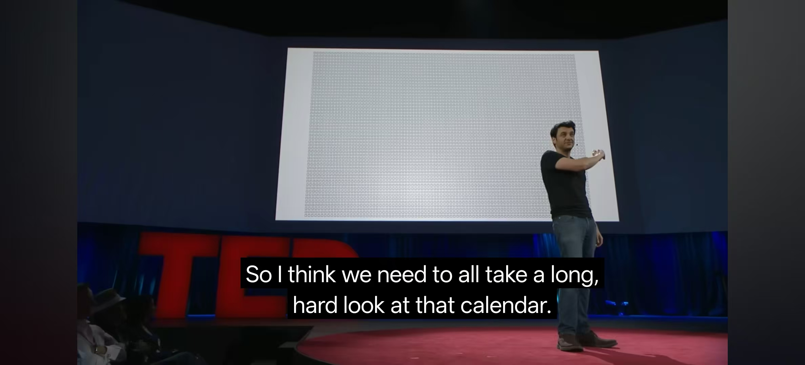

Life calendar
Just now I watched the most popular TED talk on Youtube, Inside the Mind of a Master Procrastinator | Tim Urban | TED - YouTube. I saw this video in high school but with no impression, this time I found that the speaker is the author of Wait But Why, I’m a reader of his blog and I love it. This speech is about the procrastinator’mind, there are a decision maker, and a monkey seeking for easy and fun, a simple and acceptable expression.
What impressed me the most is the life calendar, a graphic of the total weeks in life: 
He also wrote a similar post called 100 Blocks a Day 7 years ago. The first paragraph is:
Most people sleep about seven or eight hours a night. That leaves 16 or 17 hours awake each day. Or about 1,000 minutes. Let’s think about those 1,000 minutes as 100 10-minute blocks. That’s what you wake up with every day.
That’s all~so here’s my life calendar below. Assuming I can live up to 75 years, until 2076.5, it’s 3912 weeks(caculated by online tool).
This is a simple one, flex layout and dynamically generate elements then set different className. Blocks status will dynamically change each week.
.block-container {
width: 80vw;
margin: 0 -50%;
background-color: #eee;
display: flex;
flex-wrap: wrap;
gap: 3px;
}
.block {
width: 12px;
aspect-ratio: 1/1;
border-radius: 2px;
}
.passed { background-color: #4E6688; }
.future { background-color: #71C0BB; border: 1px solid #eee; }
const container = document.getElementById('calendar');
for (let i = 0; i < 3912; i++) {
const block = document.createElement('div');
const passedWeeks = Math.floor((new Date() - new Date("May 7, 2001 00:00:00"))/604800000)
block.className = 'block ' + (i < passedWeeks ? 'passed' : 'future');
container.appendChild(block);
}